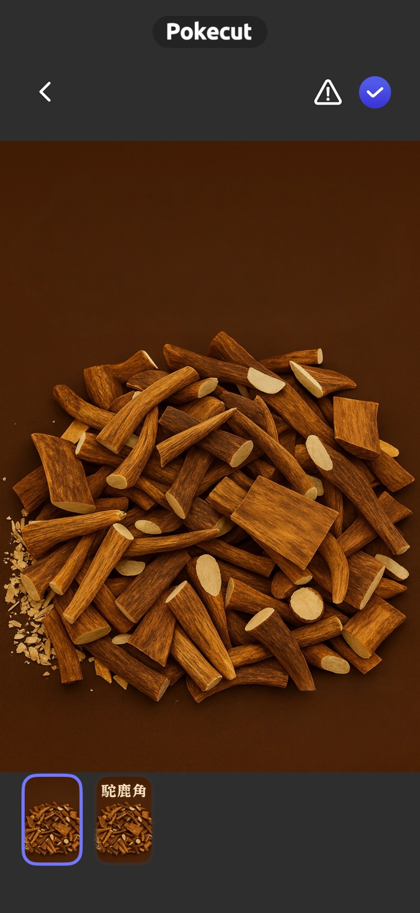
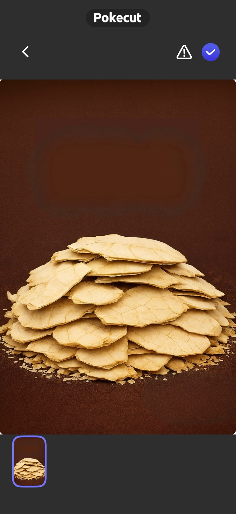
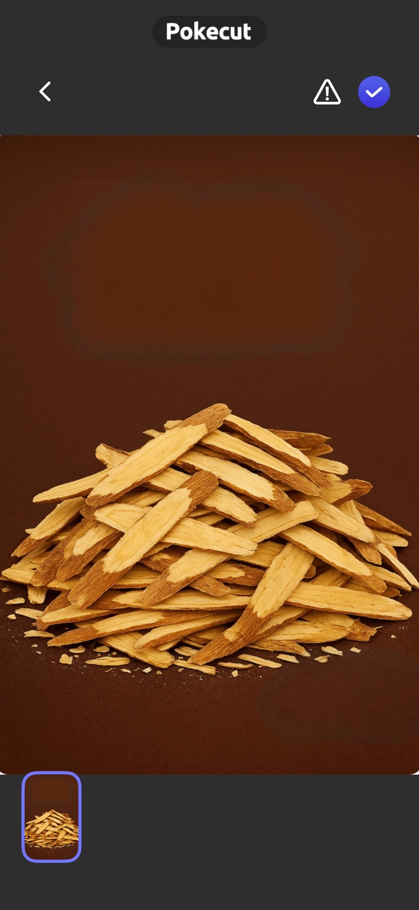
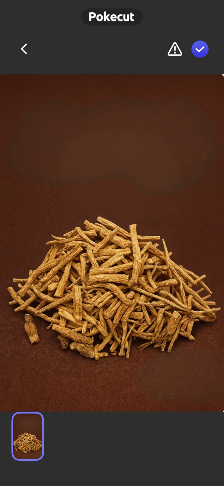
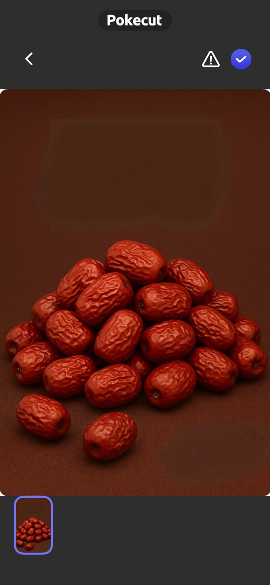
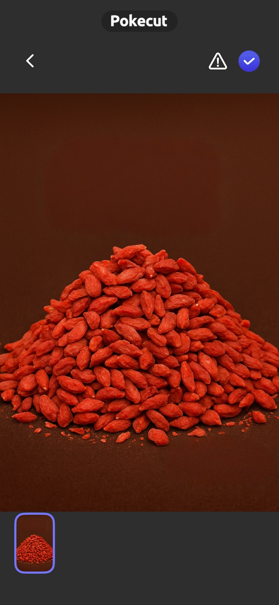

鹿角
鹿角為龜鹿配方中的核心食材之一，常與龜板共同熬製，展現傳統龜鹿文化的特色。
仙加味龜鹿嚴選六種常見漢方食材，著重來源、比例與慢火熬煮，讓日常補養更方便。

鹿角為龜鹿配方中的核心食材之一，常與龜板共同熬製，展現傳統龜鹿文化的特色。

龜板質地厚實，通常經長時間煎煮以釋放風味與膠質感，讓口感更為醇厚。

黃耆帶有溫潤草本香氣，常作為配方中的輔助食材，讓整體氣味更平衡。

粉光蔘口感細緻，入方後可增添層次，適合希望日常飲食更有變化的人。

紅棗提供自然甘甜，常見於燉煮與養生配方，能柔化整體風味。

枸杞酸甜清香，搭配紅棗與草本食材後，讓味道更順口、接受度更高。